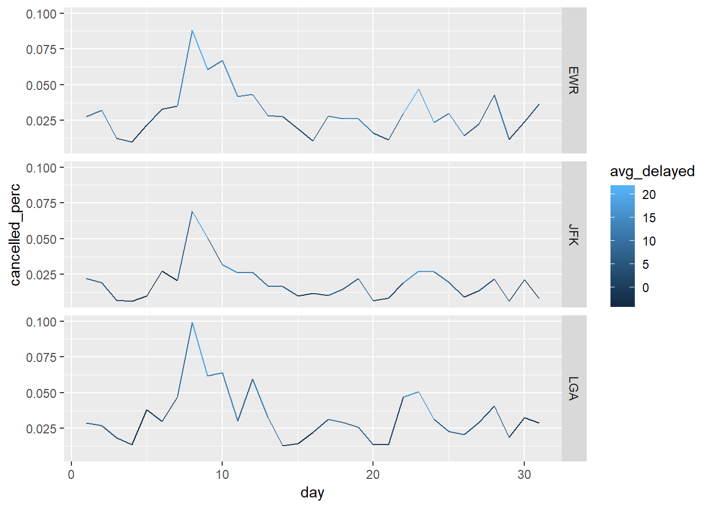
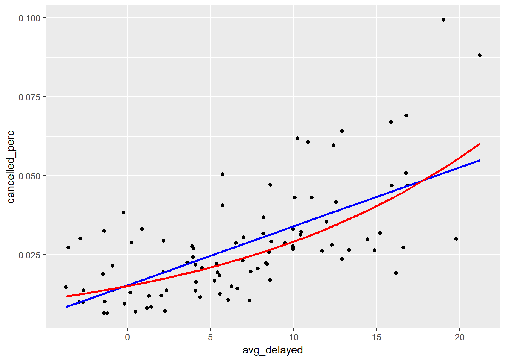

Ch. 5: Data transformations
Key questions:
- 5.2.4 #1
- 5.3.1 #4
- 5.4.1 #1
- 5.5.2 #1
- 5.6.7 #1, 3, 6
- 5.7.1 #2, 3, 4
filter(): for filtering rows by some condition(s)
arrange(): for ordering rows by some condition(s)desc: order by descending instead (often use within arrange or with ranking functions)
select(): for selecting columns by name, position, or criteria- helper functions:
everything,starts_with,ends_with,contains,matches: selects variables that match a regular expression,num_range("x", 1:3): matchesx1,x2andx3
- helper functions:
rename(): rename variables w/o dropping variables not indicatedmutate(): for changing columns and adding new columns *group_by(): for performing operations grouped by the values of some fields
summarise(): for collapsing dataframes into individual rows or aggregates – typically used in conjunction with group_by(), typically used to aggregate%>%: pass the previous output into the first position of the next argument, think of as saying, “then you do…”
count: shortcut for <group_by([var])> –> <summarise(n = n())>near: Are two values essentially equal (use to test equivalence and deals with oddities in floats)is.na: TRUE output ifNA(and related values) else FALSEbetween:between(Sepal.Length, 1, 3)is equivalent toSepal.Length >=1 & Sepal.Length <=3transmute: mutate but only keep the outputted column(s)lead,lag: take value n positions in lead or lag positionlog,log2,log10: log funcitons of basee, 2, 10cumsum,cumprod,cummin,cummax,cummean: Common cumalitive functions<,<=,>,>=,!=: Logical operatorsmin_rank,row_number,dense_rank,percent_rank,cume_dist,ntile: common ranking functions- Location:
mean;median - Measures of spread:
sd: standard deviation;IQR(): Interquartile range;mad(): median absolute deviaiton
## [1] 4.75## [1] 4.4478## [1] 30.04238- Rank:
min;quantile;max - Position:
first(x),nth(x, 2),last(x). These work similarly tox[1],x[2], andx[length(x)]but let you set a default value if that position does not exist
## [1] 1## [1] 6## [1] 100- measures of rank:
min,max,rank,quantile(x, 0.25)is just 0.25 value (generalization of median, but allows you to specify)
- counts:
n()for rows,sum(!is.na(x))for non-missing rows, for distinct count, usen_distinct(x) - Counts and proportions of logical values:
sum(x > 10),mean(y == 0) range()returns vector containing min and max of values in a vector (so returns two values).
vignette: function to open vignettes- e.g.
vignette("window-functions")
- e.g.
5.2: Filter rows
5.2.4.
1.Find all flights that…
1.1.Find flights that had an arrival delay of 2 + hrs
## Observations: 10,200
## Variables: 19
## $ year <int> 2013, 2013, 2013, 2013, 2013, 2013, 2013, 2013,...
## $ month <int> 1, 1, 1, 1, 1, 1, 1, 1, 1, 1, 1, 1, 1, 1, 1, 1,...
## $ day <int> 1, 1, 1, 1, 1, 1, 1, 1, 1, 1, 1, 1, 1, 1, 1, 1,...
## $ dep_time <int> 811, 848, 957, 1114, 1505, 1525, 1549, 1558, 17...
## $ sched_dep_time <int> 630, 1835, 733, 900, 1310, 1340, 1445, 1359, 16...
## $ dep_delay <dbl> 101, 853, 144, 134, 115, 105, 64, 119, 62, 103,...
## $ arr_time <int> 1047, 1001, 1056, 1447, 1638, 1831, 1912, 1718,...
## $ sched_arr_time <int> 830, 1950, 853, 1222, 1431, 1626, 1656, 1515, 1...
## $ arr_delay <dbl> 137, 851, 123, 145, 127, 125, 136, 123, 123, 13...
## $ carrier <chr> "MQ", "MQ", "UA", "UA", "EV", "B6", "EV", "EV",...
## $ flight <int> 4576, 3944, 856, 1086, 4497, 525, 4181, 5712, 4...
## $ tailnum <chr> "N531MQ", "N942MQ", "N534UA", "N76502", "N17984...
## $ origin <chr> "LGA", "JFK", "EWR", "LGA", "EWR", "EWR", "EWR"...
## $ dest <chr> "CLT", "BWI", "BOS", "IAH", "RIC", "MCO", "MCI"...
## $ air_time <dbl> 118, 41, 37, 248, 63, 152, 234, 53, 119, 154, 2...
## $ distance <dbl> 544, 184, 200, 1416, 277, 937, 1092, 228, 533, ...
## $ hour <dbl> 6, 18, 7, 9, 13, 13, 14, 13, 16, 16, 13, 14, 16...
## $ minute <dbl> 30, 35, 33, 0, 10, 40, 45, 59, 30, 20, 25, 22, ...
## $ time_hour <dttm> 2013-01-01 06:00:00, 2013-01-01 18:00:00, 2013...1.2.flew to Houston IAH or HOU
## # A tibble: 9,313 x 19
## year month day dep_time sched_dep_time dep_delay arr_time
## <int> <int> <int> <int> <int> <dbl> <int>
## 1 2013 1 1 517 515 2 830
## 2 2013 1 1 533 529 4 850
## 3 2013 1 1 623 627 -4 933
## 4 2013 1 1 728 732 -4 1041
## 5 2013 1 1 739 739 0 1104
## 6 2013 1 1 908 908 0 1228
## 7 2013 1 1 1028 1026 2 1350
## 8 2013 1 1 1044 1045 -1 1352
## 9 2013 1 1 1114 900 134 1447
## 10 2013 1 1 1205 1200 5 1503
## # ... with 9,303 more rows, and 12 more variables: sched_arr_time <int>,
## # arr_delay <dbl>, carrier <chr>, flight <int>, tailnum <chr>,
## # origin <chr>, dest <chr>, air_time <dbl>, distance <dbl>, hour <dbl>,
## # minute <dbl>, time_hour <dttm>1.3.flew through American, United or Delta
## # A tibble: 139,504 x 19
## year month day dep_time sched_dep_time dep_delay arr_time
## <int> <int> <int> <int> <int> <dbl> <int>
## 1 2013 1 1 517 515 2 830
## 2 2013 1 1 533 529 4 850
## 3 2013 1 1 542 540 2 923
## 4 2013 1 1 554 600 -6 812
## 5 2013 1 1 554 558 -4 740
## 6 2013 1 1 558 600 -2 753
## 7 2013 1 1 558 600 -2 924
## 8 2013 1 1 558 600 -2 923
## 9 2013 1 1 559 600 -1 941
## 10 2013 1 1 559 600 -1 854
## # ... with 139,494 more rows, and 12 more variables: sched_arr_time <int>,
## # arr_delay <dbl>, carrier <chr>, flight <int>, tailnum <chr>,
## # origin <chr>, dest <chr>, air_time <dbl>, distance <dbl>, hour <dbl>,
## # minute <dbl>, time_hour <dttm>1.4. Departed in Summer
## # A tibble: 86,995 x 19
## year month day dep_time sched_dep_time dep_delay arr_time
## <int> <int> <int> <int> <int> <dbl> <int>
## 1 2013 6 1 2 2359 3 341
## 2 2013 6 1 451 500 -9 624
## 3 2013 6 1 506 515 -9 715
## 4 2013 6 1 534 545 -11 800
## 5 2013 6 1 538 545 -7 925
## 6 2013 6 1 539 540 -1 832
## 7 2013 6 1 546 600 -14 850
## 8 2013 6 1 551 600 -9 828
## 9 2013 6 1 552 600 -8 647
## 10 2013 6 1 553 600 -7 700
## # ... with 86,985 more rows, and 12 more variables: sched_arr_time <int>,
## # arr_delay <dbl>, carrier <chr>, flight <int>, tailnum <chr>,
## # origin <chr>, dest <chr>, air_time <dbl>, distance <dbl>, hour <dbl>,
## # minute <dbl>, time_hour <dttm>1.5. Arrived more than 2 hours late, but didn’t leave late
## # A tibble: 10,008 x 19
## year month day dep_time sched_dep_time dep_delay arr_time
## <int> <int> <int> <int> <int> <dbl> <int>
## 1 2013 1 1 811 630 101 1047
## 2 2013 1 1 848 1835 853 1001
## 3 2013 1 1 957 733 144 1056
## 4 2013 1 1 1114 900 134 1447
## 5 2013 1 1 1505 1310 115 1638
## 6 2013 1 1 1525 1340 105 1831
## 7 2013 1 1 1549 1445 64 1912
## 8 2013 1 1 1558 1359 119 1718
## 9 2013 1 1 1732 1630 62 2028
## 10 2013 1 1 1803 1620 103 2008
## # ... with 9,998 more rows, and 12 more variables: sched_arr_time <int>,
## # arr_delay <dbl>, carrier <chr>, flight <int>, tailnum <chr>,
## # origin <chr>, dest <chr>, air_time <dbl>, distance <dbl>, hour <dbl>,
## # minute <dbl>, time_hour <dttm>1.6. were delayed at least an hour, but made up over 30 mins in flight
## # A tibble: 2,074 x 19
## year month day dep_time sched_dep_time dep_delay arr_time
## <int> <int> <int> <int> <int> <dbl> <int>
## 1 2013 1 1 1716 1545 91 2140
## 2 2013 1 1 2205 1720 285 46
## 3 2013 1 1 2326 2130 116 131
## 4 2013 1 3 1503 1221 162 1803
## 5 2013 1 3 1821 1530 171 2131
## 6 2013 1 3 1839 1700 99 2056
## 7 2013 1 3 1850 1745 65 2148
## 8 2013 1 3 1923 1815 68 2036
## 9 2013 1 3 1941 1759 102 2246
## 10 2013 1 3 1950 1845 65 2228
## # ... with 2,064 more rows, and 12 more variables: sched_arr_time <int>,
## # arr_delay <dbl>, carrier <chr>, flight <int>, tailnum <chr>,
## # origin <chr>, dest <chr>, air_time <dbl>, distance <dbl>, hour <dbl>,
## # minute <dbl>, time_hour <dttm>1.7. departed between midnight and 6am (inclusive)
## # A tibble: 9,344 x 19
## year month day dep_time sched_dep_time dep_delay arr_time
## <int> <int> <int> <int> <int> <dbl> <int>
## 1 2013 1 1 517 515 2 830
## 2 2013 1 1 533 529 4 850
## 3 2013 1 1 542 540 2 923
## 4 2013 1 1 544 545 -1 1004
## 5 2013 1 1 554 600 -6 812
## 6 2013 1 1 554 558 -4 740
## 7 2013 1 1 555 600 -5 913
## 8 2013 1 1 557 600 -3 709
## 9 2013 1 1 557 600 -3 838
## 10 2013 1 1 558 600 -2 753
## # ... with 9,334 more rows, and 12 more variables: sched_arr_time <int>,
## # arr_delay <dbl>, carrier <chr>, flight <int>, tailnum <chr>,
## # origin <chr>, dest <chr>, air_time <dbl>, distance <dbl>, hour <dbl>,
## # minute <dbl>, time_hour <dttm>2. Another useful dplyr filtering helper is between(). What does it do? Can you use it to simplify the code needed to answer the previous challenges?
This is a shortcut for x >= left & x <= right
solving 1.7. using between:
3. How many flights have a missing dep_time? What other variables are missing? What might these rows represent?
## # A tibble: 8,255 x 19
## year month day dep_time sched_dep_time dep_delay arr_time
## <int> <int> <int> <int> <int> <dbl> <int>
## 1 2013 1 1 NA 1630 NA NA
## 2 2013 1 1 NA 1935 NA NA
## 3 2013 1 1 NA 1500 NA NA
## 4 2013 1 1 NA 600 NA NA
## 5 2013 1 2 NA 1540 NA NA
## 6 2013 1 2 NA 1620 NA NA
## 7 2013 1 2 NA 1355 NA NA
## 8 2013 1 2 NA 1420 NA NA
## 9 2013 1 2 NA 1321 NA NA
## 10 2013 1 2 NA 1545 NA NA
## # ... with 8,245 more rows, and 12 more variables: sched_arr_time <int>,
## # arr_delay <dbl>, carrier <chr>, flight <int>, tailnum <chr>,
## # origin <chr>, dest <chr>, air_time <dbl>, distance <dbl>, hour <dbl>,
## # minute <dbl>, time_hour <dttm>8255, perhaps these are canceled flights.
4. Why is NA ^ 0 not missing? Why is NA | TRUE not missing? Why is FALSE & NA not missing? Can you figure out the general rule? (NA * 0 is a tricky counterexample!)
## [1] 1Anything raised to the 0 is 1.
## [1] FALSEFor the “AND” operator & for it to be TRUE both values would need to be TRUE so if one is FALSE the entire statment must be.
## [1] TRUEThe “OR” operator | specifies that if at least one of the values is TRUE the whole statement is, so because one is already TRUE the whole statement must be.
## [1] NAThis does not come-out to 0 as expected because the laws of addition and multiplication here only hold for natural numbers, but it is possible that NA could represent Inf or -Inf in which case the outut is NaN rather than 0.
## [1] NaNSee this article for more details: https://math.stackexchange.com/questions/28940/why-is-infinity-multiplied-by-zero-not-an-easy-zero-answer .
5.3: Arrange rows
5.3.1.
1. use arrange() to sort out all missing values to start
## # A tibble: 3 x 1
## x
## <dbl>
## 1 NA
## 2 5
## 3 22. Find most delayed departures
## Observations: 336,776
## Variables: 19
## $ year <int> 2013, 2013, 2013, 2013, 2013, 2013, 2013, 2013,...
## $ month <int> 1, 6, 1, 9, 7, 4, 3, 6, 7, 12, 5, 1, 2, 5, 12, ...
## $ day <int> 9, 15, 10, 20, 22, 10, 17, 27, 22, 5, 3, 1, 10,...
## $ dep_time <int> 641, 1432, 1121, 1139, 845, 1100, 2321, 959, 22...
## $ sched_dep_time <int> 900, 1935, 1635, 1845, 1600, 1900, 810, 1900, 7...
## $ dep_delay <dbl> 1301, 1137, 1126, 1014, 1005, 960, 911, 899, 89...
## $ arr_time <int> 1242, 1607, 1239, 1457, 1044, 1342, 135, 1236, ...
## $ sched_arr_time <int> 1530, 2120, 1810, 2210, 1815, 2211, 1020, 2226,...
## $ arr_delay <dbl> 1272, 1127, 1109, 1007, 989, 931, 915, 850, 895...
## $ carrier <chr> "HA", "MQ", "MQ", "AA", "MQ", "DL", "DL", "DL",...
## $ flight <int> 51, 3535, 3695, 177, 3075, 2391, 2119, 2007, 20...
## $ tailnum <chr> "N384HA", "N504MQ", "N517MQ", "N338AA", "N665MQ...
## $ origin <chr> "JFK", "JFK", "EWR", "JFK", "JFK", "JFK", "LGA"...
## $ dest <chr> "HNL", "CMH", "ORD", "SFO", "CVG", "TPA", "MSP"...
## $ air_time <dbl> 640, 74, 111, 354, 96, 139, 167, 313, 109, 149,...
## $ distance <dbl> 4983, 483, 719, 2586, 589, 1005, 1020, 2454, 76...
## $ hour <dbl> 9, 19, 16, 18, 16, 19, 8, 19, 7, 17, 20, 18, 8,...
## $ minute <dbl> 0, 35, 35, 45, 0, 0, 10, 0, 59, 0, 55, 35, 30, ...
## $ time_hour <dttm> 2013-01-09 09:00:00, 2013-06-15 19:00:00, 2013...3. Find the fastest flights
## Observations: 336,776
## Variables: 19
## $ year <int> 2013, 2013, 2013, 2013, 2013, 2013, 2013, 2013,...
## $ month <int> 1, 4, 12, 2, 2, 2, 3, 3, 3, 3, 5, 5, 6, 8, 9, 9...
## $ day <int> 16, 13, 6, 3, 5, 12, 2, 8, 18, 19, 8, 19, 12, 1...
## $ dep_time <int> 1355, 537, 922, 2153, 1303, 2123, 1450, 2026, 1...
## $ sched_dep_time <int> 1315, 527, 851, 2129, 1315, 2130, 1500, 1935, 1...
## $ dep_delay <dbl> 40, 10, 31, 24, -12, -7, -10, 51, 87, 41, 137, ...
## $ arr_time <int> 1442, 622, 1021, 2247, 1342, 2211, 1547, 2131, ...
## $ sched_arr_time <int> 1411, 628, 954, 2224, 1411, 2225, 1608, 2056, 1...
## $ arr_delay <dbl> 31, -6, 27, 23, -29, -14, -21, 35, 67, 19, 109,...
## $ carrier <chr> "EV", "EV", "EV", "EV", "EV", "EV", "US", "9E",...
## $ flight <int> 4368, 4631, 4276, 4619, 4368, 4619, 2132, 3650,...
## $ tailnum <chr> "N16911", "N12167", "N27200", "N13913", "N13955...
## $ origin <chr> "EWR", "EWR", "EWR", "EWR", "EWR", "EWR", "LGA"...
## $ dest <chr> "BDL", "BDL", "BDL", "PHL", "BDL", "PHL", "BOS"...
## $ air_time <dbl> 20, 20, 21, 21, 21, 21, 21, 21, 21, 21, 21, 21,...
## $ distance <dbl> 116, 116, 116, 80, 116, 80, 184, 94, 116, 116, ...
## $ hour <dbl> 13, 5, 8, 21, 13, 21, 15, 19, 13, 21, 21, 21, 2...
## $ minute <dbl> 15, 27, 51, 29, 15, 30, 0, 35, 29, 45, 59, 59, ...
## $ time_hour <dttm> 2013-01-16 13:00:00, 2013-04-13 05:00:00, 2013...4. Flights traveling the longest distance
## Observations: 336,776
## Variables: 19
## $ year <int> 2013, 2013, 2013, 2013, 2013, 2013, 2013, 2013,...
## $ month <int> 1, 1, 1, 1, 1, 1, 1, 1, 1, 1, 1, 1, 1, 1, 1, 1,...
## $ day <int> 1, 2, 3, 4, 5, 6, 7, 8, 9, 10, 11, 12, 13, 14, ...
## $ dep_time <int> 857, 909, 914, 900, 858, 1019, 1042, 901, 641, ...
## $ sched_dep_time <int> 900, 900, 900, 900, 900, 900, 900, 900, 900, 90...
## $ dep_delay <dbl> -3, 9, 14, 0, -2, 79, 102, 1, 1301, -1, -5, 1, ...
## $ arr_time <int> 1516, 1525, 1504, 1516, 1519, 1558, 1620, 1504,...
## $ sched_arr_time <int> 1530, 1530, 1530, 1530, 1530, 1530, 1530, 1530,...
## $ arr_delay <dbl> -14, -5, -26, -14, -11, 28, 50, -26, 1272, -41,...
## $ carrier <chr> "HA", "HA", "HA", "HA", "HA", "HA", "HA", "HA",...
## $ flight <int> 51, 51, 51, 51, 51, 51, 51, 51, 51, 51, 51, 51,...
## $ tailnum <chr> "N380HA", "N380HA", "N380HA", "N384HA", "N381HA...
## $ origin <chr> "JFK", "JFK", "JFK", "JFK", "JFK", "JFK", "JFK"...
## $ dest <chr> "HNL", "HNL", "HNL", "HNL", "HNL", "HNL", "HNL"...
## $ air_time <dbl> 659, 638, 616, 639, 635, 611, 612, 645, 640, 63...
## $ distance <dbl> 4983, 4983, 4983, 4983, 4983, 4983, 4983, 4983,...
## $ hour <dbl> 9, 9, 9, 9, 9, 9, 9, 9, 9, 9, 9, 9, 9, 9, 9, 9,...
## $ minute <dbl> 0, 0, 0, 0, 0, 0, 0, 0, 0, 0, 0, 0, 0, 0, 0, 0,...
## $ time_hour <dttm> 2013-01-01 09:00:00, 2013-01-02 09:00:00, 2013...and the shortest distance.
## Observations: 336,776
## Variables: 19
## $ year <int> 2013, 2013, 2013, 2013, 2013, 2013, 2013, 2013,...
## $ month <int> 7, 1, 1, 1, 1, 1, 1, 1, 1, 1, 1, 1, 1, 1, 1, 1,...
## $ day <int> 27, 3, 4, 4, 4, 5, 6, 7, 8, 9, 10, 11, 12, 13, ...
## $ dep_time <int> NA, 2127, 1240, 1829, 2128, 1155, 2125, 2124, 2...
## $ sched_dep_time <int> 106, 2129, 1200, 1615, 2129, 1200, 2129, 2129, ...
## $ dep_delay <dbl> NA, -2, 40, 134, -1, -5, -4, -5, -3, -3, 4, 6, ...
## $ arr_time <int> NA, 2222, 1333, 1937, 2218, 1241, 2224, 2212, 2...
## $ sched_arr_time <int> 245, 2224, 1306, 1721, 2224, 1306, 2224, 2224, ...
## $ arr_delay <dbl> NA, -2, 27, 136, -6, -25, 0, -12, 39, -7, -1, 9...
## $ carrier <chr> "US", "EV", "EV", "EV", "EV", "EV", "EV", "EV",...
## $ flight <int> 1632, 3833, 4193, 4502, 4645, 4193, 4619, 4619,...
## $ tailnum <chr> NA, "N13989", "N14972", "N15983", "N27962", "N1...
## $ origin <chr> "EWR", "EWR", "EWR", "EWR", "EWR", "EWR", "EWR"...
## $ dest <chr> "LGA", "PHL", "PHL", "PHL", "PHL", "PHL", "PHL"...
## $ air_time <dbl> NA, 30, 30, 28, 32, 29, 22, 25, 30, 27, 30, 30,...
## $ distance <dbl> 17, 80, 80, 80, 80, 80, 80, 80, 80, 80, 80, 80,...
## $ hour <dbl> 1, 21, 12, 16, 21, 12, 21, 21, 21, 21, 21, 21, ...
## $ minute <dbl> 6, 29, 0, 15, 29, 0, 29, 29, 30, 29, 29, 29, 17...
## $ time_hour <dttm> 2013-07-27 01:00:00, 2013-01-03 21:00:00, 2013...5.4: Select columns
5.4.1.
1. Brainstorm as many ways as possible to select dep_time, dep_delay, arr_time, and arr_delay from flights.
#method 1
select(flights, vars)
#method 2, probably
indexes <- which(names(flights) %in% vars)
select(flights, indexes)
#method 3
select(flights, contains("_time"), contains("_delay"), -contains("sched"), -contains("air"))#method 4
select(flights, starts_with("dep"), starts_with("arr")) %>%
select(ends_with("time"), ends_with("delay"))## # A tibble: 336,776 x 4
## dep_time arr_time dep_delay arr_delay
## <int> <int> <dbl> <dbl>
## 1 517 830 2 11
## 2 533 850 4 20
## 3 542 923 2 33
## 4 544 1004 -1 -18
## 5 554 812 -6 -25
## 6 554 740 -4 12
## 7 555 913 -5 19
## 8 557 709 -3 -14
## 9 557 838 -3 -8
## 10 558 753 -2 8
## # ... with 336,766 more rows2. What happens if you include the name of a variable multiple times in a select() call?
It only shows-up once.
3. What does the one_of() function do? Why might it be helpful in conjunction with this vector?
vars <- c("year", "month", "day", "dep_delay", "arr_delay")
Can be used to select multiple variables with a character vector or to negate selecting certain variables.
4. Does the result of running the following code surprise you? How do the select helpers deal with case by default? How can you change that default?
## # A tibble: 336,776 x 6
## dep_time sched_dep_time arr_time sched_arr_time air_time
## <int> <int> <int> <int> <dbl>
## 1 517 515 830 819 227
## 2 533 529 850 830 227
## 3 542 540 923 850 160
## 4 544 545 1004 1022 183
## 5 554 600 812 837 116
## 6 554 558 740 728 150
## 7 555 600 913 854 158
## 8 557 600 709 723 53
## 9 557 600 838 846 140
## 10 558 600 753 745 138
## # ... with 336,766 more rows, and 1 more variable: time_hour <dttm>Default is case insensitive, to change this specify ignore.case = FALSE
## # A tibble: 336,776 x 05.5: Add new vars
Check-out different rank functions
## [1] 1 2 3 4 4 6 7 8 8 10## [1] 1 2 3 4 4 5 6 7 7 8## [1] 0.0000000 0.1111111 0.2222222 0.3333333 0.3333333 0.5555556 0.6666667
## [8] 0.7777778 0.7777778 1.0000000## [1] 0.1 0.2 0.3 0.5 0.5 0.6 0.7 0.9 0.9 1.05.5.2.
1. Currently dep_time and sched_dep_time are convenient to look at, but hard to compute with because they’re not really continuous numbers. Convert them to a more convenient representation of number of minutes since midnight.
flights_new <- mutate(flights,
DepTime_MinsToMid = time_to_mins(dep_time),
#same thing as above, but without calling custom function
DepTime_MinsToMid_copy = (60*(dep_time %/% 100) + (dep_time %% 100)),
SchedDepTime_MinsToMid = time_to_mins(sched_dep_time))2. Compare air_time with arr_time - dep_time. What do you expect to see? What do you see? What do you need to do to fix it?
You would expect that: \(air\_time = dep\_time - arr\_time\)
However this does not seem to be the case when you look at air_time generally… see 5.5.2.2. for more details.
3. Compare dep_time, sched_dep_time, and dep_delay. How would you expect those three numbers to be related?
You would expect that: \(dep\_delay = dep\_time - sched\_dep\_time\) .
Let’s see if this is the case by creating a var dep_delay2 that uses this definition, then see if it is equal to the original dep_delay
##maybe a couple off, but for the most part seems consistent
mutate(flights,
dep_delay2 = time_to_mins(dep_time) - time_to_mins(sched_dep_time),
dep_same = dep_delay == dep_delay2) %>%
count(dep_same)## # A tibble: 3 x 2
## dep_same n
## <lgl> <int>
## 1 FALSE 1207
## 2 TRUE 327314
## 3 NA 8255Seems generally to align (with dep_delay). Those that are inconsistent are when the delay bleeds into the next day, indicating a problem with my equation above, not the dep_delay value as you can see below.
mutate(flights,
dep_delay2 = time_to_mins(dep_time) - time_to_mins(sched_dep_time),
dep_same = dep_delay == dep_delay2) %>%
filter(!dep_same) %>%
glimpse()## Observations: 1,207
## Variables: 21
## $ year <int> 2013, 2013, 2013, 2013, 2013, 2013, 2013, 2013,...
## $ month <int> 1, 1, 1, 1, 1, 1, 1, 1, 1, 1, 1, 1, 1, 1, 1, 1,...
## $ day <int> 1, 2, 2, 3, 3, 3, 4, 4, 5, 5, 6, 7, 9, 9, 9, 10...
## $ dep_time <int> 848, 42, 126, 32, 50, 235, 25, 106, 14, 37, 16,...
## $ sched_dep_time <int> 1835, 2359, 2250, 2359, 2145, 2359, 2359, 2245,...
## $ dep_delay <dbl> 853, 43, 156, 33, 185, 156, 26, 141, 15, 127, 1...
## $ arr_time <int> 1001, 518, 233, 504, 203, 700, 505, 201, 503, 3...
## $ sched_arr_time <int> 1950, 442, 2359, 442, 2311, 437, 442, 2356, 445...
## $ arr_delay <dbl> 851, 36, 154, 22, 172, 143, 23, 125, 18, 130, 9...
## $ carrier <chr> "MQ", "B6", "B6", "B6", "B6", "B6", "B6", "B6",...
## $ flight <int> 3944, 707, 22, 707, 104, 727, 707, 608, 739, 11...
## $ tailnum <chr> "N942MQ", "N580JB", "N636JB", "N763JB", "N329JB...
## $ origin <chr> "JFK", "JFK", "JFK", "JFK", "JFK", "JFK", "JFK"...
## $ dest <chr> "BWI", "SJU", "SYR", "SJU", "BUF", "BQN", "SJU"...
## $ air_time <dbl> 41, 189, 49, 193, 58, 186, 194, 44, 201, 163, 1...
## $ distance <dbl> 184, 1598, 209, 1598, 301, 1576, 1598, 273, 161...
## $ hour <dbl> 18, 23, 22, 23, 21, 23, 23, 22, 23, 22, 23, 23,...
## $ minute <dbl> 35, 59, 50, 59, 45, 59, 59, 45, 59, 30, 59, 59,...
## $ time_hour <dttm> 2013-01-01 18:00:00, 2013-01-02 23:00:00, 2013...
## $ dep_delay2 <dbl> -587, -1397, -1284, -1407, -1255, -1284, -1414,...
## $ dep_same <lgl> FALSE, FALSE, FALSE, FALSE, FALSE, FALSE, FALSE...4. Find the 10 most delayed flights using a ranking function. How do you want to handle ties? Carefully read the documentation for min_rank().
mutate(flights,
rank_delay = min_rank(-arr_delay)) %>%
arrange(rank_delay) %>%
filter(rank_delay <= 10) %>%
select(flight, sched_dep_time, arr_delay, rank_delay)## # A tibble: 10 x 4
## flight sched_dep_time arr_delay rank_delay
## <int> <int> <dbl> <int>
## 1 51 900 1272 1
## 2 3535 1935 1127 2
## 3 3695 1635 1109 3
## 4 177 1845 1007 4
## 5 3075 1600 989 5
## 6 2391 1900 931 6
## 7 2119 810 915 7
## 8 2047 759 895 8
## 9 172 1700 878 9
## 10 3744 2055 875 105. What does 1:3 + 1:10 return? Why?
## Warning in 1:3 + 1:10: longer object length is not a multiple of shorter
## object length## [1] 2 4 6 5 7 9 8 10 12 11This is returned because 1:3 is being recycled as each element is added to an element in 1:10.
6. What trigonometric functions does R provide?
5.6: Grouped summaries…
not_cancelled <- flights %>%
filter(!is.na(dep_delay), !is.na(arr_delay))
not_cancelled %>%
select(year, month, day, dep_time) %>%
group_by(year, month, day) %>%
mutate(r = min_rank(desc(dep_time))) %>%
mutate(range_min = range(r)[1],
range_max = range(r)[2]) %>%
filter(r %in% range(r)) 5.6.7.
1. Brainstorm at least 5 different ways to assess the typical delay characteristics of a group of flights.
90th percentile for delays for flights by destination
flights %>%
group_by(dest) %>%
summarise(delay.90 = quantile(arr_delay, 0.90, na.rm = TRUE)) %>%
arrange(desc(delay.90))## # A tibble: 105 x 2
## dest delay.90
## <chr> <dbl>
## 1 TUL 126
## 2 TYS 109.
## 3 CAE 107
## 4 DSM 103
## 5 OKC 99.6
## 6 BHM 99.2
## 7 RIC 90
## 8 PVD 81.3
## 9 CRW 80.8
## 10 CVG 80
## # ... with 95 more rowsaverage dep_delay by hour of day
flights %>%
group_by(hour) %>%
summarise(avg_delay = mean(arr_delay, na.rm = TRUE)) %>%
ggplot(aes(x = hour, y = avg_delay))+
geom_point()+
geom_smooth()## `geom_smooth()` using method = 'loess' and formula 'y ~ x'## Warning: Removed 1 rows containing non-finite values (stat_smooth).## Warning: Removed 1 rows containing missing values (geom_point).
Percentage of flights delayed or canceled by origin
## # A tibble: 3 x 2
## origin num_delayed
## <chr> <dbl>
## 1 EWR 0.415
## 2 JFK 0.385
## 3 LGA 0.382Percentage of flights canceled by airline
(technically not delays, but cancellations…)
flights %>%
group_by(carrier) %>%
summarise(perc_canceled = sum(is.na(arr_delay))/n(),
n = n()) %>%
ungroup() %>%
filter(n >= 1000) %>%
mutate(most_rank = min_rank(-perc_canceled)) %>%
arrange(most_rank)## # A tibble: 11 x 4
## carrier perc_canceled n most_rank
## <chr> <dbl> <int> <int>
## 1 9E 0.0632 18460 1
## 2 EV 0.0566 54173 2
## 3 MQ 0.0515 26397 3
## 4 US 0.0343 20536 4
## 5 FL 0.0261 3260 5
## 6 AA 0.0239 32729 6
## 7 WN 0.0188 12275 7
## 8 UA 0.0151 58665 8
## 9 B6 0.0107 54635 9
## 10 DL 0.00940 48110 10
## 11 VX 0.00891 5162 11Percentage of flights delayed by airline
flights %>%
group_by(carrier) %>%
summarise(perc_delayed = sum(arr_delay > 0, na.rm = TRUE)/sum(!is.na(arr_delay)),
n = n()) %>%
ungroup() %>%
filter(n >= 1000) %>%
mutate(most_rank = min_rank(-perc_delayed)) %>%
arrange(most_rank)## # A tibble: 11 x 4
## carrier perc_delayed n most_rank
## <chr> <dbl> <int> <int>
## 1 FL 0.597 3260 1
## 2 EV 0.479 54173 2
## 3 MQ 0.467 26397 3
## 4 WN 0.440 12275 4
## 5 B6 0.437 54635 5
## 6 UA 0.385 58665 6
## 7 9E 0.384 18460 7
## 8 US 0.371 20536 8
## 9 DL 0.344 48110 9
## 10 VX 0.341 5162 10
## 11 AA 0.335 32729 11Consider the following scenarios:
1.1 A flight is 15 minutes early 50% of the time, and 15 minutes late 50% of the time.
flights %>%
group_by(flight) %>%
# filter(!is.na(arr_delay)) %>% ##Keeping this in would exclude the possibility of canceled
summarise(early.15 = sum(arr_delay <= -15, na.rm = TRUE)/n(),
late.15 = sum(arr_delay >= 15, na.rm = TRUE)/n(),
n = n()) %>%
ungroup() %>%
filter(early.15 == .5, late.15 == .5)## # A tibble: 18 x 4
## flight early.15 late.15 n
## <int> <dbl> <dbl> <int>
## 1 107 0.5 0.5 2
## 2 2072 0.5 0.5 2
## 3 2366 0.5 0.5 2
## 4 2500 0.5 0.5 2
## 5 2552 0.5 0.5 2
## 6 3495 0.5 0.5 2
## 7 3518 0.5 0.5 2
## 8 3544 0.5 0.5 2
## 9 3651 0.5 0.5 2
## 10 3705 0.5 0.5 2
## 11 3916 0.5 0.5 2
## 12 3951 0.5 0.5 2
## 13 4273 0.5 0.5 2
## 14 4313 0.5 0.5 2
## 15 5297 0.5 0.5 2
## 16 5322 0.5 0.5 2
## 17 5388 0.5 0.5 2
## 18 5505 0.5 0.5 41.2 A flight is always 10 minutes late.
flights %>%
group_by(flight) %>%
summarise(late.10 = sum(arr_delay >= 10)/n()) %>%
ungroup() %>%
filter(late.10 == 1)## # A tibble: 93 x 2
## flight late.10
## <int> <dbl>
## 1 94 1
## 2 730 1
## 3 974 1
## 4 1084 1
## 5 1226 1
## 6 1510 1
## 7 1514 1
## 8 1859 1
## 9 1868 1
## 10 2101 1
## # ... with 83 more rows1.3 A flight is 30 minutes early 50% of the time, and 30 minutes late 50% of the time.
flights %>%
group_by(flight) %>%
# filter(!is.na(arr_delay)) %>% ##Keeping this in would exclude the possibility of canceled
summarise(early.30 = sum(arr_delay <= -30, na.rm = TRUE)/n(),
late.30 = sum(arr_delay >= 30, na.rm = TRUE)/n(),
n = n()) %>%
ungroup() %>%
filter(early.30 == .5, late.30 == .5)## # A tibble: 3 x 4
## flight early.30 late.30 n
## <int> <dbl> <dbl> <int>
## 1 3651 0.5 0.5 2
## 2 3916 0.5 0.5 2
## 3 3951 0.5 0.5 21.4 99% of the time a flight is on time. 1% of the time it’s 2 hours late.
flights %>%
group_by(flight) %>%
# filter(!is.na(arr_delay)) %>% ##Keeping this in would exclude the possibility of canceled
summarise(ontime = sum(arr_delay <= 0, na.rm = TRUE)/n(),
late.120 = sum(arr_delay >= 120, na.rm = TRUE)/n(),
n = n()) %>%
ungroup() %>%
filter(ontime == .99, late.120 == .01)## # A tibble: 0 x 4
## # ... with 4 variables: flight <int>, ontime <dbl>, late.120 <dbl>,
## # n <int>Looks like this exact proportion doesn’t happen. Let’s change this to be >= 99% and <= 1%.
flights %>%
group_by(flight) %>%
# filter(!is.na(arr_delay)) %>% ##Keeping this in would exclude the possibility of canceled
summarise(ontime = sum(arr_delay <= 0, na.rm = TRUE)/n(),
late.120 = sum(arr_delay >= 120, na.rm = TRUE)/n(),
n = n()) %>%
ungroup() %>%
filter(ontime >= .99, late.120 <= .01)## # A tibble: 391 x 4
## flight ontime late.120 n
## <int> <dbl> <dbl> <int>
## 1 46 1 0 2
## 2 52 1 0 2
## 3 88 1 0 1
## 4 90 1 0 1
## 5 96 1 0 1
## 6 99 1 0 1
## 7 106 1 0 1
## 8 122 1 0 1
## 9 174 1 0 1
## 10 202 1 0 5
## # ... with 381 more rows2. Which is more important: arrival delay or departure delay?
Arrival delay.
3. Come up with another approach that will give you the same output as not_cancelled %>% count(dest) and not_cancelled %>% count(tailnum, wt = distance) (without using count()).
not_cancelled <- flights %>%
filter(!is.na(dep_delay), !is.na(arr_delay))
not_cancelled %>%
group_by(dest) %>%
summarise(n = n())## # A tibble: 104 x 2
## dest n
## <chr> <int>
## 1 ABQ 254
## 2 ACK 264
## 3 ALB 418
## 4 ANC 8
## 5 ATL 16837
## 6 AUS 2411
## 7 AVL 261
## 8 BDL 412
## 9 BGR 358
## 10 BHM 269
## # ... with 94 more rows## # A tibble: 4,037 x 2
## tailnum n
## <chr> <dbl>
## 1 D942DN 3418
## 2 N0EGMQ 239143
## 3 N10156 109664
## 4 N102UW 25722
## 5 N103US 24619
## 6 N104UW 24616
## 7 N10575 139903
## 8 N105UW 23618
## 9 N107US 21677
## 10 N108UW 32070
## # ... with 4,027 more rows4. Our definition of cancelled flights (is.na(dep_delay) | is.na(arr_delay)) is slightly suboptimal. Why? Which is the most important column?
You only need the is.na(arr_delay) column. By having both, it is doing more checks then is necessary.
(While not a perfect method) you can see that the number of rows with just is.na(arr_delay) would be the same in either case.
## # A tibble: 1 x 1
## n
## <int>
## 1 9430## # A tibble: 1 x 1
## n
## <int>
## 1 9430To be more precise, you could check these with the identical function.
check_1 <- filter(flights, is.na(dep_delay) | is.na(arr_delay))
check_2 <- filter(flights, is.na(arr_delay))
identical(check_1, check_2)## [1] TRUE5. Look at the number of cancelled flights per day. Is there a pattern?
Number of canceled flights by day of month:
flights %>%
group_by(day) %>%
summarise(num = n(),
cancelled = sum(is.na(arr_delay)),
avg_delayed = mean(arr_delay, na.rm = TRUE),
cancelled_perc = cancelled / num) %>%
ggplot(aes(x = day, y = cancelled))+
geom_line()
- Some days of the month have more cancellations
Is the proportion of cancelled flights related to the average delay?
Proporton of canceled flights and then average delay of flights by day:
flights %>%
group_by(day) %>%
summarise(cancelled = sum(is.na(arr_delay)),
avg_delayed = mean(arr_delay, na.rm = TRUE),
num = n(),
cancelled_perc = cancelled / num) %>%
ggplot(aes(x = day, y = cancelled_perc))+
geom_line()
flights %>%
group_by(day) %>%
summarise(cancelled = sum(is.na(arr_delay)),
avg_delayed = mean(arr_delay, na.rm = TRUE),
num = n(),
cancelled_perc = cancelled / num) %>%
ggplot(aes(x = day, y = avg_delayed))+
geom_line()

- Looks roughly like there is some overlap.
Plot, treating day independently:
flights %>%
group_by(day) %>%
summarise(cancelled = sum(is.na(arr_delay)),
avg_delayed = mean(arr_delay, na.rm = TRUE),
num = n(),
cancelled_perc = cancelled / num) %>%
ggplot(aes(x = cancelled_perc, y = avg_delayed))+
geom_point()+
geom_smooth()## `geom_smooth()` using method = 'loess' and formula 'y ~ x'
- suggests positive association
6. Which carrier has the worst delays?
flights %>%
group_by(carrier) %>%
summarise(avg_delay = mean(arr_delay, na.rm = TRUE),
n = n()) %>%
arrange(desc(avg_delay))## # A tibble: 16 x 3
## carrier avg_delay n
## <chr> <dbl> <int>
## 1 F9 21.9 685
## 2 FL 20.1 3260
## 3 EV 15.8 54173
## 4 YV 15.6 601
## 5 OO 11.9 32
## 6 MQ 10.8 26397
## 7 WN 9.65 12275
## 8 B6 9.46 54635
## 9 9E 7.38 18460
## 10 UA 3.56 58665
## 11 US 2.13 20536
## 12 VX 1.76 5162
## 13 DL 1.64 48110
## 14 AA 0.364 32729
## 15 HA -6.92 342
## 16 AS -9.93 714Challenge: can you disentangle the effects of bad airports vs. bad carriers? Why/why not? (Hint: think about flights %>% group_by(carrier, dest) %>% summarise(n()))
Somewhat difficult to untangle in the origin airports because carriers may predominantly go through one of the three. The code below produces the origin name that the carrier that flies from the most along with the proportion of associated flights.
flights %>%
group_by(carrier, origin) %>%
summarise(n = n()) %>%
mutate(perc = n / sum(n)) %>%
group_by(carrier) %>%
mutate(rank = min_rank(-perc)) %>%
arrange(carrier, rank) %>%
filter(rank == 1) %>%
select(carrier, highest_origin = origin, highest_prop = perc, n_total = n) %>%
arrange(desc(n_total))## # A tibble: 16 x 4
## # Groups: carrier [16]
## carrier highest_origin highest_prop n_total
## <chr> <chr> <dbl> <int>
## 1 UA EWR 0.786 46087
## 2 EV EWR 0.811 43939
## 3 B6 JFK 0.770 42076
## 4 DL LGA 0.479 23067
## 5 MQ LGA 0.641 16928
## 6 AA LGA 0.472 15459
## 7 9E JFK 0.794 14651
## 8 US LGA 0.640 13136
## 9 WN EWR 0.504 6188
## 10 VX JFK 0.697 3596
## 11 FL LGA 1 3260
## 12 AS EWR 1 714
## 13 F9 LGA 1 685
## 14 YV LGA 1 601
## 15 HA JFK 1 342
## 16 OO LGA 0.812 26Below we look at destinations and the carrier that has the highest proportion of flights from one of the NYC destinations (ignoring for specific origin – JFK, LGA, etc. are not seperated).
flights %>%
group_by(dest, carrier) %>%
summarise(n = n()) %>%
mutate(perc = n / sum(n)) %>%
group_by(dest) %>%
mutate(rank = min_rank(-perc)) %>%
arrange(carrier, rank) %>%
filter(rank == 1) %>%
select(dest, highest_carrier = carrier, highest_perc = perc, n_total = n) %>%
arrange(desc(n_total))## # A tibble: 105 x 4
## # Groups: dest [105]
## dest highest_carrier highest_perc n_total
## <chr> <chr> <dbl> <int>
## 1 ATL DL 0.614 10571
## 2 CLT US 0.614 8632
## 3 DFW AA 0.831 7257
## 4 MIA AA 0.617 7234
## 5 ORD UA 0.404 6984
## 6 IAH UA 0.962 6924
## 7 SFO UA 0.512 6819
## 8 FLL B6 0.544 6563
## 9 MCO B6 0.460 6472
## 10 LAX UA 0.360 5823
## # ... with 95 more rowsTo get at the question of ‘best carrier’, you may consider doing a grouped comparison of average delays or cancellataions controlling for where they are flying to and from what origin… Or build a linear model with the formula, arr_delay ~ carrier + dest + origin.
7. What does the sort argument to count() do. When might you use it?
sort orders by n, you may want to use it when you want to see the highest frequency levels.
5.7: Grouped mutates…
5.7.1.
1. Refer back to the lists of useful mutate and filtering functions. Describe how each operation changes when you combine it with grouping.
Performs operations on vectors for each group (rather than all together).
2. Which plane (tailnum) has the worst on-time record?
flights %>%
group_by(tailnum) %>%
summarise(n = n(),
num_not_delayed = sum(arr_delay <= 0, na.rm = TRUE),
ontime_rate = num_not_delayed/ n,
sum_delayed_time_grt0 = sum(ifelse(arr_delay >= 0, arr_delay, 0), na.rm = TRUE)) %>%
filter(n > 100, !is.na(tailnum)) %>%
arrange(ontime_rate)## # A tibble: 1,200 x 5
## tailnum n num_not_delayed ontime_rate sum_delayed_time_grt0
## <chr> <int> <int> <dbl> <dbl>
## 1 N505MQ 242 83 0.343 5911
## 2 N15910 280 105 0.375 8737
## 3 N36915 228 86 0.377 6392
## 4 N16919 251 96 0.382 7955
## 5 N14998 230 88 0.383 7166
## 6 N14953 256 100 0.391 6550
## 7 N22971 230 90 0.391 6547
## 8 N503MQ 191 75 0.393 4420
## 9 N27152 109 43 0.394 2058
## 10 N31131 109 43 0.394 2740
## # ... with 1,190 more rowsN505MQ
3. What time of day should you fly if you want to avoid delays as much as possible?
average dep_delay by hour of day
flights %>%
group_by(hour) %>%
summarise(med_delay = mean(arr_delay, na.rm = TRUE)) %>%
ggplot(aes(x = hour, y = med_delay))+
geom_point()+
geom_smooth()## `geom_smooth()` using method = 'loess' and formula 'y ~ x'## Warning: Removed 1 rows containing non-finite values (stat_smooth).## Warning: Removed 1 rows containing missing values (geom_point).
Fly in the morning.
4. For each destination, compute the total minutes of delay. For each, flight, compute the proportion of the total delay for its destination.
flights %>%
filter(arr_delay > 0) %>%
group_by(dest, flight) %>%
summarise(TotalDelay_DestFlight = sum(arr_delay, na.rm = TRUE)) %>%
mutate(TotalDelay_Dest = sum(TotalDelay_DestFlight),
PropOfDest = TotalDelay_DestFlight / TotalDelay_Dest)## # A tibble: 8,505 x 5
## # Groups: dest [103]
## dest flight TotalDelay_DestFlight TotalDelay_Dest PropOfDest
## <chr> <int> <dbl> <dbl> <dbl>
## 1 ABQ 65 1943 4487 0.433
## 2 ABQ 1505 2544 4487 0.567
## 3 ACK 1191 1413 2974 0.475
## 4 ACK 1195 62 2974 0.0208
## 5 ACK 1291 267 2974 0.0898
## 6 ACK 1491 1232 2974 0.414
## 7 ALB 3260 111 9580 0.0116
## 8 ALB 3264 4 9580 0.000418
## 9 ALB 3811 599 9580 0.0625
## 10 ALB 3817 196 9580 0.0205
## # ... with 8,495 more rowsI did this such that flights could not have “negative” delays, this could have been approached differently such that “early arrivals” also got credit…
5. Delays are typically temporally correlated: even once the problem that caused the initial delay has been resolved, later flights are delayed to allow earlier flights to leave. Using lag() explore how the delay of a flight is related to the delay of the immediately preceding flight.
flights %>%
group_by(origin) %>%
mutate(delay_lag = lag(dep_delay, 1),
diff_lag = abs(dep_delay -delay_lag)) %>%
ungroup() %>%
select(dep_delay, delay_lag) %>%
na.omit() %>%
cor()## dep_delay delay_lag
## dep_delay 1.0000000 0.3506866
## delay_lag 0.3506866 1.0000000Correlation of dep_delayt-1 with dep_delayt is 0.35.
Below is a function to get the correlation out for any lag level.
cor_by_lag <- function(lag){
flights %>%
group_by(origin) %>%
mutate(delay_lag = lag(dep_delay, lag),
diff_lag = abs(dep_delay -delay_lag)) %>%
ungroup() %>%
select(dep_delay, delay_lag) %>%
na.omit() %>%
cor() %>%
.[2,1] %>%
as.vector()
}Let’s see the correlation pushing the lag time back.
## [1] 0.3506866## [1] 0.2622796## [1] 0.04023232It makes sense that these values get smaller as flights that are further apart have delay lengths that are less correlated. See 5.7.1.8. for the outputs if iterating this function across many lags.
6. Look at each destination. Can you find flights that are suspiciously fast? (i.e. flights that represent a potential data entry error). Compute the air time a flight relative to the shortest flight to that destination. Which flights were most delayed in the air?
flights %>%
filter(!is.na(arr_delay)) %>%
group_by(dest) %>%
mutate(sd_air_time = sd(air_time),
mean_air_time = mean(air_time)) %>%
ungroup() %>%
mutate(supect_fast_cutoff = mean_air_time - 4*sd_air_time,
suspect_flag = air_time < supect_fast_cutoff) %>%
select(dest, flight, hour, day, month, air_time, sd_air_time, mean_air_time, supect_fast_cutoff, suspect_flag, air_time, air_time) %>%
filter(suspect_flag) ## # A tibble: 4 x 10
## dest flight hour day month air_time sd_air_time mean_air_time
## <chr> <int> <dbl> <int> <int> <dbl> <dbl> <dbl>
## 1 BNA 3805 19 23 3 70 11.0 114.
## 2 GSP 4292 20 13 5 55 8.13 93.4
## 3 ATL 1499 17 25 5 65 9.81 113.
## 4 MSP 4667 15 2 7 93 11.8 151.
## # ... with 2 more variables: supect_fast_cutoff <dbl>, suspect_flag <lgl>7. Find all destinations that are flown by at least two carriers. Use that information to rank the carriers.
I found this quesiton ambiguous in terms of what it wants when it says “rank” the carriers using this. What I did was filter to just those destinations that have at least two carriers and then count the number of destinations with multiple carriers that each airline travels to. So it’s almost which airlines have more routes to ‘crowded’ destinations.
flights %>%
group_by(dest) %>%
mutate(n_carrier = n_distinct(carrier)) %>%
filter(n_carrier > 1) %>%
group_by(carrier) %>%
summarise(n_dest = n_distinct(dest)) %>%
mutate(rank = min_rank(-n_dest)) %>%
arrange(rank)## # A tibble: 16 x 3
## carrier n_dest rank
## <chr> <int> <int>
## 1 EV 51 1
## 2 9E 48 2
## 3 UA 42 3
## 4 DL 39 4
## 5 B6 35 5
## 6 AA 19 6
## 7 MQ 19 6
## 8 WN 10 8
## 9 OO 5 9
## 10 US 5 9
## 11 VX 4 11
## 12 YV 3 12
## 13 FL 2 13
## 14 AS 1 14
## 15 F9 1 14
## 16 HA 1 14Another way to approach this may have been to say to evaluate the delays between carriers going to the same destination and used that as a way of comparing and ‘ranking’ the best carriers. This would have been a more ambitious problem to answer.
8. For each plane, count the number of flights before the first delay of greater than 1 hour.
tail_nums_counts <- flights %>%
arrange(tailnum, month, day, dep_time) %>%
group_by(tailnum) %>%
mutate(cum_sum = cumsum(arr_delay <= 60),
nrow = row_number(),
nrow_equal = nrow == cum_sum,
cum_sum_before = cum_sum * nrow_equal) %>%
mutate(total_before_hour = max(cum_sum_before, na.rm = TRUE)) %>%
select(year, month, day, dep_time, tailnum, arr_delay, cum_sum, nrow, nrow_equal, cum_sum_before, total_before_hour) %>%
ungroup()
#let's change this to get rid of canceled flights, because those don't count as flights or delays.
tail_nums_counts <- flights %>%
filter(!is.na(arr_delay)) %>%
select(tailnum, month, day, dep_time, arr_delay) %>%
arrange(tailnum, month, day, dep_time) %>%
group_by(tailnum) %>%
mutate(cum_sum = cumsum(arr_delay <= 60),
nrow = row_number(),
nrow_equal = nrow == cum_sum,
cum_sum_before = cum_sum * nrow_equal) %>%
mutate(total_before_hour = max(cum_sum_before, na.rm = TRUE)) %>%
select(month, day, dep_time, tailnum, arr_delay, cum_sum, nrow, nrow_equal, cum_sum_before, total_before_hour) %>%
ungroup()
tail_nums_counts %>%
filter(!is.na(tailnum)) %>%
arrange(desc(nrow), tailnum) %>%
distinct(tailnum, .keep_all = TRUE) %>%
select(tailnum, total_before_hour) %>%
arrange(tailnum)## # A tibble: 4,037 x 2
## tailnum total_before_hour
## <chr> <dbl>
## 1 D942DN 0
## 2 N0EGMQ 0
## 3 N10156 9
## 4 N102UW 25
## 5 N103US 46
## 6 N104UW 3
## 7 N10575 0
## 8 N105UW 22
## 9 N107US 20
## 10 N108UW 36
## # ... with 4,027 more rowsAppendix
5.4.1.3.
You can also use one_of() for negating specific columns fields by name.
## # A tibble: 336,776 x 15
## year month day sched_dep_time sched_arr_time carrier flight tailnum
## <int> <int> <int> <int> <int> <chr> <int> <chr>
## 1 2013 1 1 515 819 UA 1545 N14228
## 2 2013 1 1 529 830 UA 1714 N24211
## 3 2013 1 1 540 850 AA 1141 N619AA
## 4 2013 1 1 545 1022 B6 725 N804JB
## 5 2013 1 1 600 837 DL 461 N668DN
## 6 2013 1 1 558 728 UA 1696 N39463
## 7 2013 1 1 600 854 B6 507 N516JB
## 8 2013 1 1 600 723 EV 5708 N829AS
## 9 2013 1 1 600 846 B6 79 N593JB
## 10 2013 1 1 600 745 AA 301 N3ALAA
## # ... with 336,766 more rows, and 7 more variables: origin <chr>,
## # dest <chr>, air_time <dbl>, distance <dbl>, hour <dbl>, minute <dbl>,
## # time_hour <dttm>5.5.2.1.
Other, more sophisticated method10
5.5.2.2.
Let’s create this variable. I’ll name it air_calc.
First method:
flights_new2 <- mutate(flights,
# This air_time_clac step is necessary because you need to take into account red-eye flights in calculation
air_time_calc = ifelse(dep_time > arr_time, arr_time + 2400, arr_time),
air_calc = time_to_mins(air_time_calc) - time_to_mins(dep_time)) The above method is the simple approach, though it doesn’t take into account the timezone of the arrivals locations. To handle this, I do a left_join on the airports dataframe and change arr_time to take into account the timezone and output the value in EST (as opposed to local time). We have not learned about ‘joins’ yet, so don’t worry if this loses you.
flights_new2 <- flights %>%
left_join(select(nycflights13::airports, dest = faa, tz)) %>%
mutate(arr_time_old = arr_time) %>%
mutate(arr_time = arr_time - 100*(tz+5)) %>%
mutate(
# This arr_time_calc step is a helper variable I created to take into account the red-eye flights in calculation
arr_time_calc = ifelse(dep_time > arr_time, arr_time + 2400, arr_time),
air_calc = time_to_mins(arr_time_calc) - time_to_mins(dep_time)) %>%
select(-arr_time_calc)## Joining, by = "dest"Curiouis if anyone explored the air_time variable and figured out the details of how exactly it was off if there was something systematic? I checked this briefly below, but did not go deep.
Closer look at air_time
Wanted to look at original air_time variable a little more. Histogram below shows that most differences are now between 20 - 40 minutes from the actual time.
flights_new2 %>%
group_by(dest) %>%
summarise(distance_med = median(distance, na.rm = TRUE),
air_calc_med = median(air_calc, na.rm = TRUE),
air_old_med = median(air_time, na.rm = TRUE),
diff_new_old = air_calc_med - air_old_med,
diff_hrs = as.factor(round(diff_new_old/60)),
num = n()) %>%
ggplot(aes(diff_new_old))+
geom_histogram()## `stat_bin()` using `bins = 30`. Pick better value with `binwidth`.## Warning: Removed 5 rows containing non-finite values (stat_bin).
Regressing diff on arr_delay and dep_delay (remember diff is the difference between air_time and air_calc)
mod_air_time2 <- mutate(flights_new2, diff = (air_time - air_calc)) %>%
select(-air_time, -air_calc, -flight, -tailnum, -dest) %>%
na.omit() %>%
lm(diff ~ dep_delay + arr_delay, data = .)
summary(mod_air_time2)##
## Call:
## lm(formula = diff ~ dep_delay + arr_delay, data = .)
##
## Residuals:
## Min 1Q Median 3Q Max
## -93.168 -6.684 0.688 6.878 101.169
##
## Coefficients:
## Estimate Std. Error t value Pr(>|t|)
## (Intercept) -33.511843 0.024118 -1389.5 <2e-16 ***
## dep_delay 0.533376 0.001355 393.5 <2e-16 ***
## arr_delay -0.552852 0.001217 -454.2 <2e-16 ***
## ---
## Signif. codes: 0 '***' 0.001 '**' 0.01 '*' 0.05 '.' 0.1 ' ' 1
##
## Residual standard error: 12.43 on 319806 degrees of freedom
## Multiple R-squared: 0.3956, Adjusted R-squared: 0.3956
## F-statistic: 1.047e+05 on 2 and 319806 DF, p-value: < 2.2e-16Doing such accounts for ~40% of the variation in the values.
- note
dep_delayandarr_delayvariables are highly colinear – and the coefficients are opposite in the model.
flights_new2 %>%
select(air_time, air_calc, arr_delay, dep_delay) %>%
mutate(diff = air_time - air_calc) %>%
select(-air_time, -air_calc) %>%
na.omit() %>%
cor()## arr_delay dep_delay diff
## arr_delay 1.0000000 0.91531953 -0.32086698
## dep_delay 0.9153195 1.00000000 -0.07582942
## diff -0.3208670 -0.07582942 1.00000000Often this suggests you may not need to include both variables in the model as they will likely be providing the same information. Though here that is not the case as only including arr_delay associates with a steep decline in R^2 to just account for ~10% of the variation.
mod_air_time <- mutate(flights_new2, diff = (air_time - air_calc)) %>%
select(-air_time, -air_calc, -flight, -tailnum, -dest) %>%
na.omit() %>%
lm(diff ~ arr_delay, data = .)
summary(mod_air_time)##
## Call:
## lm(formula = diff ~ arr_delay, data = .)
##
## Residuals:
## Min 1Q Median 3Q Max
## -182.960 -6.385 2.013 7.983 154.382
##
## Coefficients:
## Estimate Std. Error t value Pr(>|t|)
## (Intercept) -2.984e+01 2.710e-02 -1101.3 <2e-16 ***
## arr_delay -1.144e-01 5.972e-04 -191.6 <2e-16 ***
## ---
## Signif. codes: 0 '***' 0.001 '**' 0.01 '*' 0.05 '.' 0.1 ' ' 1
##
## Residual standard error: 15.14 on 319807 degrees of freedom
## Multiple R-squared: 0.103, Adjusted R-squared: 0.103
## F-statistic: 3.67e+04 on 1 and 319807 DF, p-value: < 2.2e-165.6.7.1.
Below is an extension on using the quantile method, but it is far beyond where we are right now.
For the question 90th percentile for delays for flights by destination we used quantile to output only the 90th percentile of values for each destination. Here, I want to address what if you had wanted to output the delays at multiple values, say, arbitrarily the 25th, 50th, 75th percentiles. One option would be to create a new variable for each value and in each quantile function sepcify 0.25, 0.50, 0.75 respectively.
flights %>%
group_by(dest) %>%
summarise(delay.25 = quantile(arr_delay, 0.25, na.rm = TRUE),
delay.50 = quantile(arr_delay, 0.50, na.rm = TRUE),
delay.75 = quantile(arr_delay, 0.75, na.rm = TRUE))## # A tibble: 105 x 4
## dest delay.25 delay.50 delay.75
## <chr> <dbl> <dbl> <dbl>
## 1 ABQ -24 -5.5 22.8
## 2 ACK -13 -3 10
## 3 ALB -17 -4 28
## 4 ANC -10.8 1.5 10
## 5 ATL -12 -1 16
## 6 AUS -19 -5 15
## 7 AVL -11 -1 13
## 8 BDL -18 -10 14
## 9 BGR -21.8 -9 19.8
## 10 BHM -20 -2 34
## # ... with 95 more rowsBut there is a lot of replication here and the quantile function is also able to output more than one value by specifying the probs argument.
## 25% 50% 75%
## 25.75 50.50 75.25So, in theory, rather than calling quantile multiple times, you could just call it once. However for any variable you create summarise is expecting only a single value output for each row, so just passing it in as-is will cause it to fail.
flights %>%
group_by(dest) %>%
summarise(delays = quantile(arr_delay, probs = c(0.25, .50, 0.75), na.rm = TRUE))## Error: Column `delays` must be length 1 (a summary value), not 3To make this work you need to make the value a list, so that it will output a single list in each row of the column[This style is covered at the end of the book in the section ‘list-columns’ in iteration.][Also you need your dataframe to be in a tibble form rather than traditional dataframes for list-cols to work]. I am going to create another list-column field of the quantiles I specified.
prob_vals <- seq(from = 0.25, to = 0.75, by = 0.25)
flights_quantiles <- flights %>%
group_by(dest) %>%
summarise(delays_val = list(quantile(arr_delay, probs = prob_vals, na.rm = TRUE)),
delays_q = list(c('25th', '50th', '75th')))
flights_quantiles## # A tibble: 105 x 3
## dest delays_val delays_q
## <chr> <list> <list>
## 1 ABQ <dbl [3]> <chr [3]>
## 2 ACK <dbl [3]> <chr [3]>
## 3 ALB <dbl [3]> <chr [3]>
## 4 ANC <dbl [3]> <chr [3]>
## 5 ATL <dbl [3]> <chr [3]>
## 6 AUS <dbl [3]> <chr [3]>
## 7 AVL <dbl [3]> <chr [3]>
## 8 BDL <dbl [3]> <chr [3]>
## 9 BGR <dbl [3]> <chr [3]>
## 10 BHM <dbl [3]> <chr [3]>
## # ... with 95 more rowsTo convert these outputs out of the list-col format, I can use the function unnest.
## # A tibble: 315 x 3
## dest delays_val delays_q
## <chr> <dbl> <chr>
## 1 ABQ -24 25th
## 2 ABQ -5.5 50th
## 3 ABQ 22.8 75th
## 4 ACK -13 25th
## 5 ACK -3 50th
## 6 ACK 10 75th
## 7 ALB -17 25th
## 8 ALB -4 50th
## 9 ALB 28 75th
## 10 ANC -10.8 25th
## # ... with 305 more rowsThis will output the values as individual rows, repeating the dest value for the length of the list. If I want to spread the delays_quantile values into seperate columns I can use the spread function that is in the tidying R chapter.
## # A tibble: 105 x 4
## dest delays_q_25th delays_q_50th delays_q_75th
## <chr> <dbl> <dbl> <dbl>
## 1 ABQ -24 -5.5 22.8
## 2 ACK -13 -3 10
## 3 ALB -17 -4 28
## 4 ANC -10.8 1.5 10
## 5 ATL -12 -1 16
## 6 AUS -19 -5 15
## 7 AVL -11 -1 13
## 8 BDL -18 -10 14
## 9 BGR -21.8 -9 19.8
## 10 BHM -20 -2 34
## # ... with 95 more rowsLet’s plot our unnested (but not unspread) data to see roughly the distribution of the delays for each destination at our quantiles of interest11.
flights_quantiles %>%
unnest() %>%
# mutate(delays_q = forcats::fct_reorder(f = delays_q, x = delays_val, fun = mean, na.rm = TRUE)) %>%
ggplot(aes(x = delays_q, y = delays_val))+
geom_boxplot()## Warning: Removed 3 rows containing non-finite values (stat_boxplot).
It can be a hassle naming the values explicitly. quantile’s default probs argument value is 0, 0.25, 0.5, 0.75, 1. Rather than needing to type the delays_q values list(c('0%', '25%', '50%', '75%', '100%')) you could have generated the values of these names dynamically using the map function in the purrr package (see chapter on iteration) with example for this by passing the names function over each value in delays_val.
flights_quantiles2 <- flights %>%
group_by(dest) %>%
summarise(delays_val = list(quantile(arr_delay, na.rm = TRUE)),
delays_q = list(c('0th', '25th', '50th', '75th', '100th'))) %>%
mutate(delays_q2 = purrr::map(delays_val, names))
flights_quantiles2## # A tibble: 105 x 4
## dest delays_val delays_q delays_q2
## <chr> <list> <list> <list>
## 1 ABQ <dbl [5]> <chr [5]> <chr [5]>
## 2 ACK <dbl [5]> <chr [5]> <chr [5]>
## 3 ALB <dbl [5]> <chr [5]> <chr [5]>
## 4 ANC <dbl [5]> <chr [5]> <chr [5]>
## 5 ATL <dbl [5]> <chr [5]> <chr [5]>
## 6 AUS <dbl [5]> <chr [5]> <chr [5]>
## 7 AVL <dbl [5]> <chr [5]> <chr [5]>
## 8 BDL <dbl [5]> <chr [5]> <chr [5]>
## 9 BGR <dbl [5]> <chr [5]> <chr [5]>
## 10 BHM <dbl [5]> <chr [5]> <chr [5]>
## # ... with 95 more rowsAnd then let’s unnest the data12.
## # A tibble: 525 x 4
## dest delays_val delays_q delays_q2
## <chr> <dbl> <chr> <chr>
## 1 ABQ -61 0th 0%
## 2 ABQ -24 25th 25%
## 3 ABQ -5.5 50th 50%
## 4 ABQ 22.8 75th 75%
## 5 ABQ 153 100th 100%
## 6 ACK -25 0th 0%
## 7 ACK -13 25th 25%
## 8 ACK -3 50th 50%
## 9 ACK 10 75th 75%
## 10 ACK 221 100th 100%
## # ... with 515 more rows5.6.7.1.4.
But let’s look at those flights that have the greatest differences in proportion on-time vs. 2 hours late while still having values in both categories13.
flights %>%
group_by(flight) %>%
summarise(ontime = sum(arr_delay <= 0, na.rm = TRUE)/n(),
late.120 = sum(arr_delay >= 120, na.rm = TRUE)/n(),
n = n()) %>%
ungroup() %>%
filter_at(c("ontime", "late.120"), all_vars(. != 0 & . != 1)) %>%
mutate(max_dist = abs(ontime - late.120)) %>%
arrange(desc(max_dist))## # A tibble: 2,098 x 5
## flight ontime late.120 n max_dist
## <int> <dbl> <dbl> <int> <dbl>
## 1 5288 0.927 0.0244 41 0.902
## 2 2085 0.901 0.00658 152 0.895
## 3 2174 0.914 0.0286 35 0.886
## 4 2243 0.9 0.0167 120 0.883
## 5 2180 0.889 0.0131 153 0.876
## 6 2118 0.867 0.00699 143 0.860
## 7 1167 0.864 0.00662 302 0.858
## 8 3613 0.886 0.0286 35 0.857
## 9 1772 0.891 0.0364 55 0.855
## 10 1157 0.847 0.00667 150 0.84
## # ... with 2,088 more rows5.6.7.4.
To measure the difference in speed you can use the microbenchmark function
microbenchmark::microbenchmark(sub_optimal = filter(flights, is.na(dep_delay) | is.na(arr_delay)),
optimal = filter(flights, is.na(arr_delay)),
times = 10)## Unit: milliseconds
## expr min lq mean median uq max neval cld
## sub_optimal 5.5279 6.2409 6.55796 6.74025 6.9686 7.2225 10 b
## optimal 3.9316 4.3135 4.55498 4.57885 4.8483 5.1514 10 a5.6.7.5.
Explore the percentage delayed vs. percentage cancelled.
flights %>%
group_by(day) %>%
summarise(cancelled = sum(is.na(arr_delay)),
delayed = sum(arr_delay > 0, na.rm = TRUE),
num = n(),
cancelled_perc = cancelled / num,
delayed_perc = delayed / num) %>%
ggplot(aes(x = day))+
geom_line(aes(y = cancelled_perc), colour = "dark blue")+
geom_line(aes(y = delayed_perc), colour = "dark red")
Let’s try faceting by origin and looking at both values next to each other.
flights %>%
group_by(origin, day) %>%
summarise(cancelled = sum(is.na(arr_delay)),
avg_delayed = mean(arr_delay, na.rm = TRUE),
num = n(),
cancelled_perc = cancelled / num) %>%
gather(key = type, value = value, avg_delayed, cancelled_perc) %>%
ggplot(aes(x = day, y = value))+
geom_line()+
facet_grid(type ~ origin, scales = "free_y")
Look’s like the relationship across origins with the delay overlaid with color (not actually crazy about how this look).
flights %>%
group_by(origin, day) %>%
summarise(cancelled = sum(is.na(arr_delay)),
avg_delayed = mean(arr_delay, na.rm = TRUE),
num = n(),
cancelled_perc = cancelled / num) %>%
ggplot(aes(x = day, y = cancelled_perc, colour = avg_delayed))+
geom_line()+
facet_grid(origin ~ .)
Let’s look at values as individual points and overlay a geom_smooth
flights %>%
group_by(origin, day) %>%
summarise(cancelled = sum(is.na(arr_delay)),
avg_delayed = mean(arr_delay, na.rm = TRUE),
num = n(),
cancelled_perc = cancelled / num) %>%
ggplot(aes(avg_delayed, cancelled_perc, colour = origin))+
geom_point()+
geom_smooth()## `geom_smooth()` using method = 'loess' and formula 'y ~ x'
Modeling approach:
We also could approach this using a model and regressing the average proportion of cancelled flights on average delay.
cancelled_mod1 <- flights %>%
group_by(origin, day) %>%
summarise(cancelled = sum(is.na(arr_delay)),
avg_delayed = mean(arr_delay, na.rm = TRUE),
num = n(),
cancelled_perc = cancelled / num) %>%
lm(cancelled_perc ~ avg_delayed, data = .)
summary(cancelled_mod1)##
## Call:
## lm(formula = cancelled_perc ~ avg_delayed, data = .)
##
## Residuals:
## Min 1Q Median 3Q Max
## -0.026363 -0.009392 -0.002610 0.006196 0.048436
##
## Coefficients:
## Estimate Std. Error t value Pr(>|t|)
## (Intercept) 0.0152588 0.0020945 7.285 1.12e-10 ***
## avg_delayed 0.0018688 0.0002311 8.086 2.54e-12 ***
## ---
## Signif. codes: 0 '***' 0.001 '**' 0.01 '*' 0.05 '.' 0.1 ' ' 1
##
## Residual standard error: 0.01342 on 91 degrees of freedom
## Multiple R-squared: 0.4181, Adjusted R-squared: 0.4117
## F-statistic: 65.39 on 1 and 91 DF, p-value: 2.537e-12If you were confused by the . in lm(cancelled_perc ~ avg_delayed, data = .), the dot specifies where the output from the prior steps should be piped into. The default is for it to go into the first argument, but for the lm function, data is not the first argument, so I have to explicitly tell it that the prior steps output should be inputted into the data argument of the lm function. See On piping dots for more details.
The average delay accounts for 42% of the variation in the proportion of canceled flights.
Modeling the log-odds of the proportion of cancelled flights might be more successful as it produces a variable not constrained by 0 to 1, better aligning with the assumptions of linear regression.
cancelled_mod2 <- flights %>%
group_by(origin, day) %>%
summarise(cancelled = sum(is.na(arr_delay)),
avg_delayed = mean(arr_delay, na.rm = TRUE),
num = n(),
cancelled_perc = cancelled / num,
cancelled_logodds = log(cancelled / (num - cancelled))) %>%
lm(cancelled_logodds ~ avg_delayed, data = .)To convert logodds back to percentage, I built the following equation.
Let’s calculate the MAE or mean absolute error on our percentages.
cancelled_preds2 <- flights %>%
group_by(origin, day) %>%
summarise(cancelled = sum(is.na(arr_delay)),
avg_delayed = mean(arr_delay, na.rm = TRUE),
num = n(),
cancelled_perc = cancelled / num,
cancelled_logodds = log(cancelled / (num - cancelled))) %>%
ungroup() %>%
modelr::spread_predictions(cancelled_mod1, cancelled_mod2) %>%
mutate(cancelled_mod2 = convert_logodds(cancelled_mod2))
cancelled_preds2 %>%
summarise(MAE1 = mean(abs(cancelled_perc - cancelled_mod1), na.rm = TRUE),
MAE2 = mean(abs(cancelled_perc - cancelled_mod2), na.rm = TRUE),
mean_value = mean(cancelled_perc, na.rm = TRUE))## # A tibble: 1 x 3
## MAE1 MAE2 mean_value
## <dbl> <dbl> <dbl>
## 1 0.0101 0.00954 0.0279Let’s look at the differences in the outputs of the predictions from these models.
cancelled_preds2 %>%
ggplot(aes(avg_delayed, cancelled_perc))+
geom_point()+
scale_size_continuous(range = c(1, 2))+
geom_line(aes(y = cancelled_mod1), colour = "blue", size = 1)+
geom_line(aes(y = cancelled_mod2), colour = "red", size = 1)
5.6.7.6.
As an example, let’s look at just Atl flights from LGA and compare DL, FL, MQ.
## # A tibble: 5 x 2
## carrier n
## <chr> <int>
## 1 DL 5544
## 2 EV 1
## 3 FL 2337
## 4 MQ 2322
## 5 WN 59And compare the median delays between the three primary carriers DL, FL, MQ.
carriers_lga_atl <- flights %>%
filter(dest == 'ATL', origin == 'LGA') %>%
group_by(carrier) %>%
# filter out small samples
mutate(n_tot = n()) %>%
filter(n_tot > 100) %>%
select(-n_tot) %>%
###
filter(!is.na(arr_delay)) %>%
ungroup()
label <- carriers_lga_atl %>%
group_by(carrier) %>%
summarise(arr_delay = median(arr_delay, na.rm = TRUE))
carriers_lga_atl %>%
select(carrier, arr_delay) %>%
ggplot()+
geom_boxplot(aes(carrier, arr_delay, colour = carrier), outlier.shape = NA)+
coord_cartesian(y = c(-60, 75))+
geom_text(mapping = aes(x = carrier, group = carrier, y = arr_delay + 5, label = arr_delay), data = label)
Or perhaps you want to use a statistical method to compare if the differences in the grouped are significant…
##
## Call:
## lm(formula = arr_delay ~ carrier, data = .)
##
## Residuals:
## Min 1Q Median 3Q Max
## -64.74 -22.33 -11.33 4.67 888.67
##
## Coefficients:
## Estimate Std. Error t value Pr(>|t|)
## (Intercept) 6.3273 0.6149 10.29 < 2e-16 ***
## carrierFL 14.4172 1.1340 12.71 < 2e-16 ***
## carrierMQ 7.7067 1.1417 6.75 1.56e-11 ***
## ---
## Signif. codes: 0 '***' 0.001 '**' 0.01 '*' 0.05 '.' 0.1 ' ' 1
##
## Residual standard error: 45.48 on 9979 degrees of freedom
## Multiple R-squared: 0.01692, Adjusted R-squared: 0.01672
## F-statistic: 85.86 on 2 and 9979 DF, p-value: < 2.2e-16This shows the mean delay for DL is ~6.3, FL is ~20.7, MQ is ~14 and FL and MQ are significantly different from DL (and DL is significantly different from 0)15. The carrier accouts for ~1.6% of the variation in arrival… etc….
5.7.1.6.
Let’s look at the fastest 20 air_times for each destination.
flights_new2 %>%
group_by(dest) %>%
mutate(min_rank = min_rank(air_time)) %>%
filter(min_rank < 20) %>%
ggplot(aes(distance, air_time, colour = dest))+
geom_point()+
guides(colour = FALSE)
Let’s do the same for my custom air_time calculation air_calc.
flights_new2 %>%
group_by(dest) %>%
mutate(min_rank = min_rank(air_calc)) %>%
filter(min_rank < 20) %>%
ggplot(aes(distance, air_calc, colour = dest))+
geom_point()+
guides(colour = FALSE)
Rather than the fastest 20, let’s look at the mean dist and air_time for each16.
First using the air_time value.
flights_new2 %>%
mutate_at(.vars = c("dep_time", "arr_time"),
.funs = funs(time_to_mins)) %>%
group_by(dest) %>%
summarise(mean_air = mean(air_time, na.rm = TRUE),
mean_dist = mean(distance, na.rm = TRUE)) %>%
ggplot(., aes(x = mean_dist, y = mean_air))+
geom_point(aes(colour = dest))+
scale_y_continuous(breaks = seq(0, 660, 60))+
guides(colour = FALSE)## Warning: funs() is soft deprecated as of dplyr 0.8.0
## please use list() instead
##
## # Before:
## funs(name = f(.)
##
## # After:
## list(name = ~f(.))
## This warning is displayed once per session.## Warning: Removed 1 rows containing missing values (geom_point).
Then with the custom air_calc.
flights_new2 %>%
mutate_at(.vars = c("dep_time", "arr_time"),
.funs = funs(time_to_mins)) %>%
group_by(dest) %>%
summarise(mean_air = mean(air_calc, na.rm = TRUE),
mean_dist = mean(distance, na.rm = TRUE)) %>%
ggplot(., aes(x = mean_dist, y = mean_air))+
geom_point(aes(colour = dest))+
scale_y_continuous(breaks = seq(0, 660, 60))+
guides(colour = FALSE)## Warning: Removed 5 rows containing missing values (geom_point).
5.7.1.5
Let’s run this for every 3 lags (1, 4, 7, …) and plot.
lags_cors <- tibble(lag = seq(1,200, 3)) %>%
mutate(cor = purrr::map_dbl(lag, cor_by_lag))
lags_cors %>%
ggplot(aes(x = lag, cor))+
geom_line()+
coord_cartesian(ylim = c(0, 0.40))
On piping dots
The . let’s you explicitly state where to pipe the output from the prior steps. The default is to have it go into the first argument of the function.
Let’s look at an example:
## # A tibble: 3 x 2
## origin n
## <chr> <int>
## 1 EWR 117127
## 2 JFK 109079
## 3 LGA 101140This is the exact same thing as the code below, I just added the dots to be explicit about where in the function the output from the prior steps will go:
## # A tibble: 3 x 2
## origin n
## <chr> <int>
## 1 EWR 117127
## 2 JFK 109079
## 3 LGA 101140Functions in dplyr, etc. expect dataframes in the first argument, so the default piping behavior works fine you don’t end-up using the dot in this way. However functions outside of the tidyverse are not always so consistent and may expect the dataframe (or w/e your output from the prior step is) in a different location of the function, hence the need to use the dot to specify where it should go.
The example below uses base R’s lm (linear models) function to regress arr_delay on dep_delay and distance17. The first argument expects a function, the second argument the data, hence the need for the dot.
##
## Call:
## lm(formula = arr_delay ~ dep_delay + distance, data = .)
##
## Coefficients:
## (Intercept) dep_delay distance
## -3.212779 1.018077 -0.002551When using the . in piping, I will usually make the argment name I am piping into explicit. This makes it more clear and also means if I have the position order wrong it doesn’t matter.
You can also use the . in conjunction with R’s subsetting to output vectors. In the example below I filter flights, then extract the arr_delay column as a vector and pipe it into the base R function quantile.
flights %>%
filter(!is.na(arr_delay)) %>%
.$arr_delay %>%
quantile(probs = seq(from = 0, to = 1, by = 0.10))## 0% 10% 20% 30% 40% 50% 60% 70% 80% 90% 100%
## -86 -26 -19 -14 -10 -5 1 9 21 52 1272quantile is expecting a numeric vector in it’s first argument so the above works. If instead of .$arr_delay, you’d tried select(arr_delay) the function would have failed because the select statement outputs a dataframe rather than a vector (and quantile would have become very angry with you). One weakness with the above method is it only allows you to input a single vector into the base R function (while many funcitons can take in multiple vectors).
A better way of doing this is to use the with function. The with function allows you to pipe a dataframe into the first argument and then reference the column in that dataframe with just the field names. This makes using those base R funcitons easier and more similar in syntax to tidyverse functions. For example, the above example would look become.
flights %>%
filter(!is.na(arr_delay)) %>%
with(quantile(arr_delay, probs = seq(from = 0, to = 1, by = 0.10)))## 0% 10% 20% 30% 40% 50% 60% 70% 80% 90% 100%
## -86 -26 -19 -14 -10 -5 1 9 21 52 1272This method also makes it easy to input multiple field names in this style. Let’s look at this with the table function18
## carrier
## origin 9E AA AS B6 DL EV F9 FL HA MQ OO
## EWR 1193 3363 709 6472 4295 41557 0 0 0 2097 6
## JFK 13742 13600 0 41666 20559 1326 0 0 342 6838 0
## LGA 2359 14984 0 5911 22804 8225 681 3175 0 16102 23
## carrier
## origin UA US VX WN YV
## EWR 45501 4326 1552 6056 0
## JFK 4478 2964 3564 0 0
## LGA 7803 12541 0 5988 544plotly
The plotly package has a cool function ggplotly that allows you to add wrappers ggplot that turn it into html that allow you to do things like zoom-in and hover over points. It also has a frame argument that allows you to make animations or filter between points. Here is an example from the flights dataset.
p <- flights %>%
group_by(hour, month) %>%
summarise(avg_delay = mean(arr_delay, na.rm = TRUE)) %>%
ggplot(aes(x = hour, y = avg_delay, group = month, frame = month))+
geom_point()+
geom_smooth()
plotly::ggplotly(p)## `geom_smooth()` using method = 'loess' and formula 'y ~ x'## Warning: Removed 1 rows containing non-finite values (stat_smooth).This is the base from which this is built.
flights %>%
group_by(hour, month) %>%
summarise(avg_delay = mean(arr_delay, na.rm = TRUE)) %>%
ggplot(aes(x = hour, y = avg_delay, group = month))+
geom_point()+
geom_smooth()## `geom_smooth()` using method = 'loess' and formula 'y ~ x'## Warning: Removed 1 rows containing non-finite values (stat_smooth).## Warning: Removed 1 rows containing missing values (geom_point).
This method is helpful for if you have more than ust a couple variables you are applying a transformation to.↩
The mutate step that is commented-out would reorder the
delays_qvariable according to the mean value of thedelays_val, but this is not necessary here so I commented it out. You will learn more about this in the factors chapter.lm↩The names assigned by the
quantilefunction are a little different from those I supplied.↩The output below is actually just maximizing difference in proportion 2 hrs late vs on time, it does not matter whether the higher proportion is on-time or late. It just happens in practice that the higher proprotion is generally the on-time↩
Another approach may be to try and identify the individual risk of having a flight cancelled based on the average delay. If this is the case, you may want to use model evaluation techniques that seperate models based on the assigned probabilities in which case MAE may actually not be the most appropriate evaluation technique. You could try using logistic regression for this. You may also consider taking into account the weight of each of the points. I had discussions on these, but decided they were too in the weeds so deleted them even from the appendix…↩
Repeated t-test methods could be used for comparing MQ and FL, see function
pairwise.t.test↩Each colour corresponds with a
destthough I excluded the legend.↩You may want to add a step to pipe this into
summary()after thelmstep as well.↩tableproduces contingency tables.↩